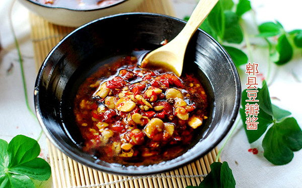

川菜之魂：郫县豆瓣的历史
郫县豆瓣是四川三大名瓣之一。它在选材与工艺上独树一帜，与众不同。香味醇厚却未加一点香料，色泽油润却未加任何油脂，全靠精细的加工技术和原料的优良而达到色、香、味俱佳的标准，具有辣味重、鲜红油润、辣椒块大、回味香甜的特点，是川味食谱中常用的调味佳品，有“川菜灵魂”之称。
相传明末清初，一移民在入蜀途中，其赖以充饥之蚕豆遇连日阴雨而霉生。不忍弃，遂置于田埂晾干就以鲜辣椒拌和而食，竟鲜美无比，余味悠长，其后竟以此为生。此概为郫县豆瓣之最初起源。
清康熙年间(公元1688年)，后人承传此道，于郫县开设作坊取本地区原料与清水，以此法大量生产豆瓣，渐成气候，“郫县豆瓣”亦始得名。民国初年，郫县豆瓣的生产已成相当规模，并籍以郫县所产之大烟远销各地，东经成渝沿江而下至湘鄂，南转宜宾行销云贵，西由雅安销至康藏，北取道广元销往陕甘。外地来郫烟贩均争购豆瓣以返乡馈赠友邻亲朋，从此，郫县豆瓣名声远扬。
郫县地处成都平原中部，因得都江堰灌溉之利，盛产稻、小麦、油菜籽、胡豆(蚕豆)、大麻等。这里的胡豆品质优良，以它作为主要原料加工制成的豆瓣酱，油润红亮，瓣子酥脆，有较重的辣味，香甜可口，除用作调味外，也可单独佐饭;用熟油拌，其味尤佳。
豆瓣酱含有丰富的蛋白质和维生素，可延缓动脉硬化，降低胆固醇，促进肠蠕动，增进食欲。豆瓣酱有益气健脾、利湿消肿之功，同时它还含有大脑和神经组织的重要组成成分磷脂，并含有丰富的胆碱，有健脑作用，可增强记忆力。此外，豆瓣酱也是抗癌食品之一，是降低前列腺增生症及肠癌发病率的食疗佳品。